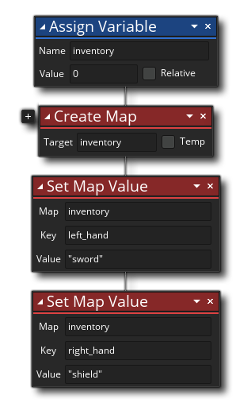

描述
This action will create a new map data-structure and return the index value so you can later access the map through the other Data Structure actions. The map index will be returned to the Target Variable that you supply, which can have been created earlier using either Assign Variable or Declare Temp, or you can flag the "Temp" checkbox to name and create a temporary local variable to store the value until the end of the script or event. A newly created map data structure is considered "empty", ie: it contains no map key/value entries. Note that you can create additional DS maps by clicking the plus icon
beside the action, and selecting another variable to hold the map ID.
Important! Creating any data structure uses up memory on the target platform, and as such all data structures should be free when no longer needed using the action Free Data Structure otherwise you get a memory leak which can impair your games performance or even cause it to crash. This is particularly relevant when using temporary local variables to store data structure indices, as these variables are removed at the end of the code or event, but that does not mean the data structure is removed too! The data structure will still exist, only you will have no way to reference it, so either use an instance variable and free the structure at a later time, or free the structure before the end of the event or script if its index is stored in a temporary variable.
动作语法：

参数：
参数 描述 目标 The target variable to store the map index in
举例：
The above action block code creates a new instance variable and a new map data structure. The index value of the map is stored in the variable and then used to add two items to the map.